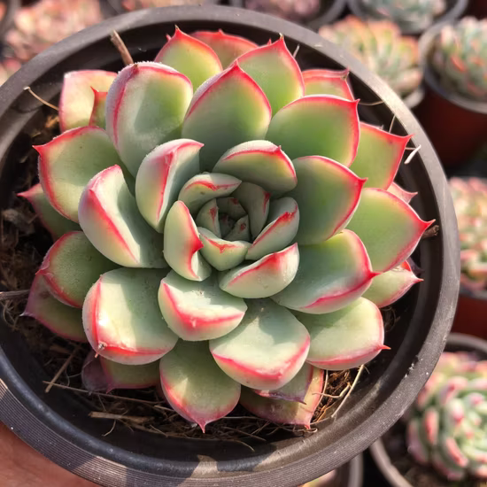
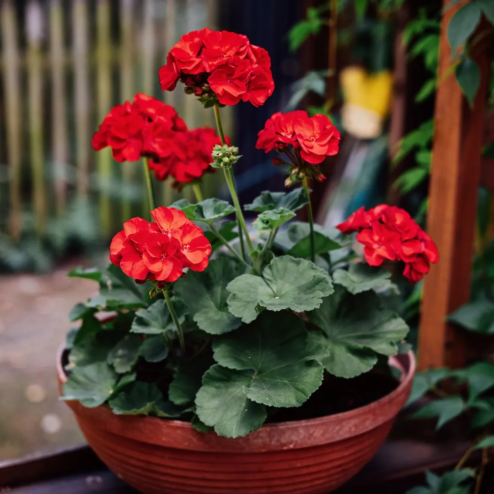
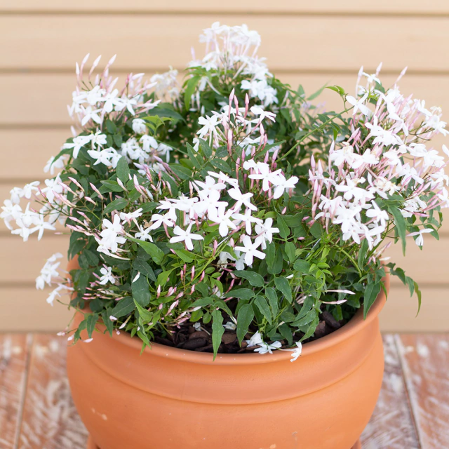
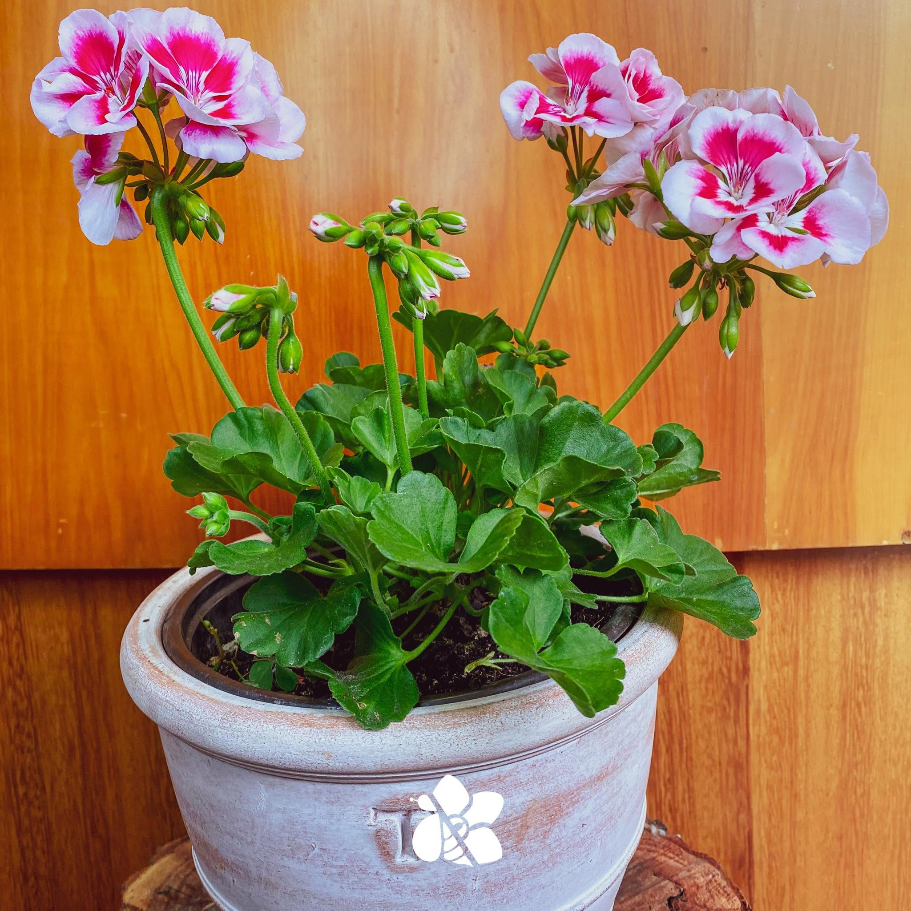
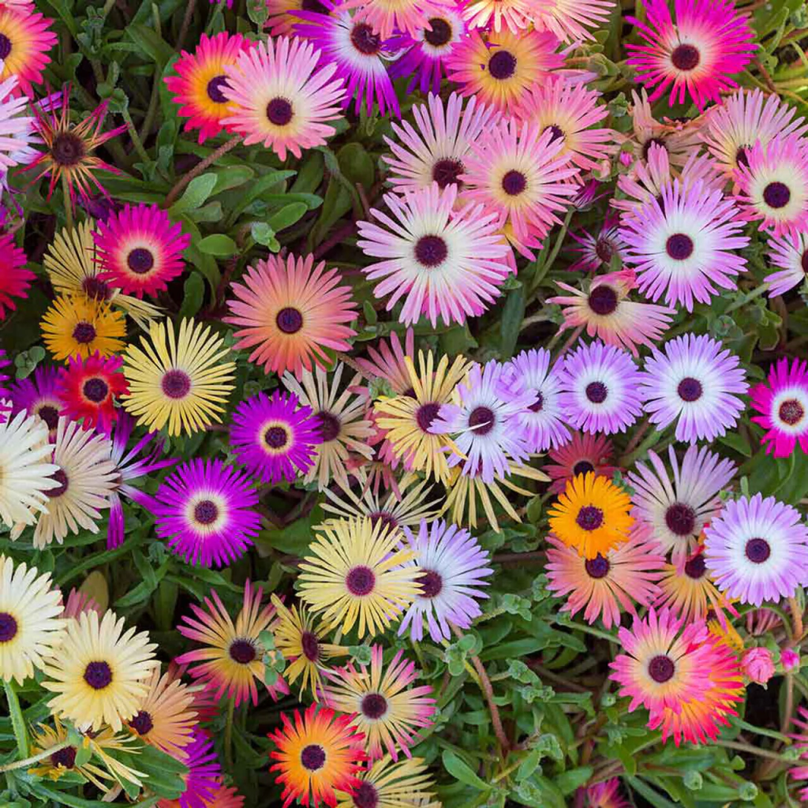

Suculenta
Bellas, variadas y muy fáciles de cuidar. Almacenan agua en sus hojas y tallos, por lo que requieren muy poco riego. Ideales para decorar interiores luminosos o terrazas.

Explora nuestra variedad adaptada para cada espacio de tu hogar.
Bellas, variadas y muy fáciles de cuidar. Almacenan agua en sus hojas y tallos, por lo que requieren muy poco riego. Ideales para decorar interiores luminosos o terrazas.

Planta de exterior con flores vibrantes y fragantes. Perfecta para balcones y patios, necesita sol directo y riego moderado.

Planta trepadora con flores blancas o rosadas, muy fragante. Ideal para cubrir muros, rejas o columnas. Requiere riego regular y poda después de la floración.

Planta ornamental con flores coloridas, ideal para jardines y macetas. Requiere poca atención y es resistente a condiciones adversas.

Planta de exterior con flores amarillas y naranjas, muy resistente al sol y a la sequía. Ideal para jardines y macetas.
